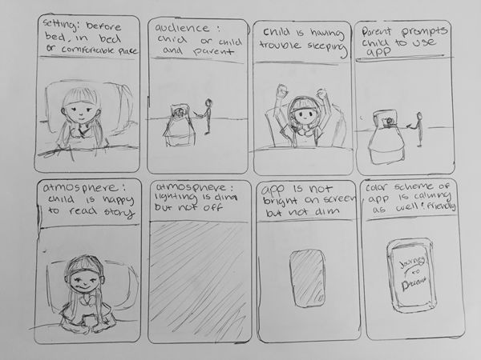
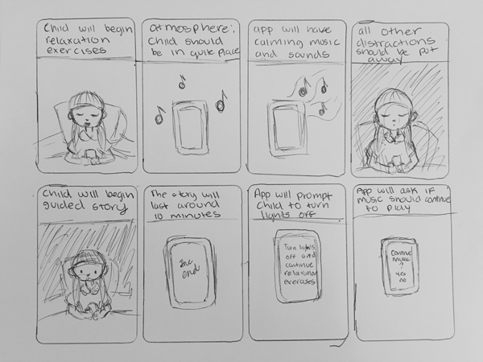

This exercise made me realize that my app should prompt users to create a more relaxing setting. For example, prompting the user to create a quiet environment with dim lighting. The user should also be away from any distractions, like TV’s or other people. If the environment is incorrect, the app will have less of an effect.
 